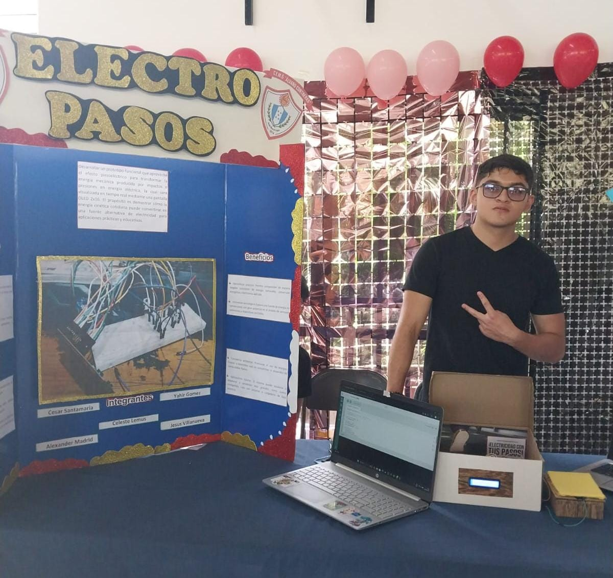
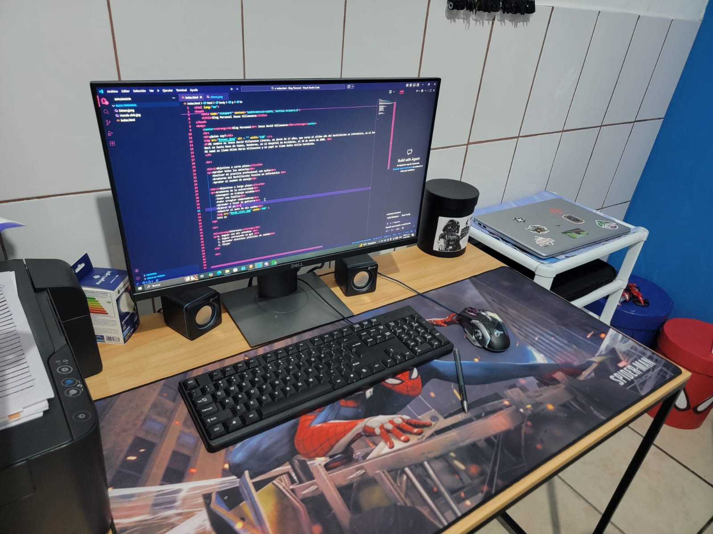
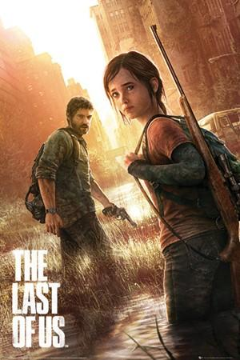
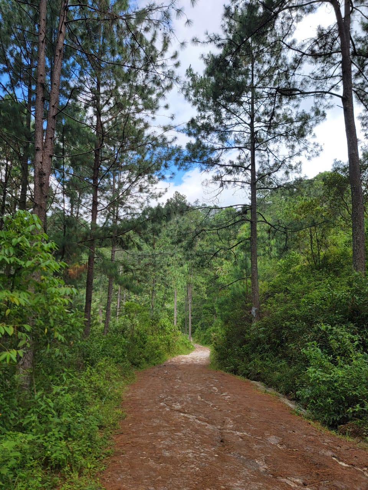
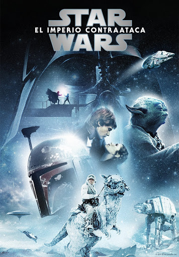
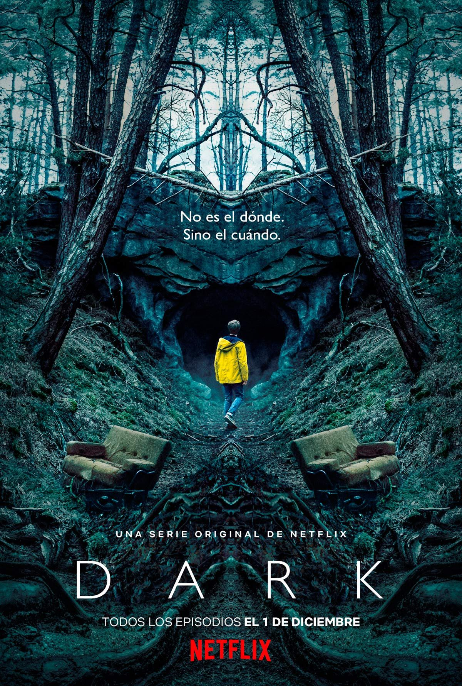

Blog Personal
Jesus David Villanueva
Directorio:
- ¿Quien soy?
- Objetivos a corto plazo
- Objetivos a largo plazo
- Interes
- Habilidades
- Redes sociales
¿Quien soy?

Mi nombre es Jesus David Villanueva Linares, un joven de 17 años, que cursa el ultimo año del bachillerato en informatica, en el Instituto De Educacion Media Gubernamental Alvaro Contreras.
Naci en Santa Rosa de Copan, Honduras, en el Hospital de Occidente, el 30 de enero de 2009; mi mamá se llama Hilda Maria Villanueva y mi papá se llama Rodis Avilio Sarmiento.
Objetivos a corto plazo:
-Aprobar todas las materias
-Realizar mi practica profesional con exito
-Graduarme del Bachillerato Tecnico en Informatica
-Aprobar el examen de manejo
Objetivos a largo plazo:
-Lograr graduarme de la universidad
-Conseguir un trabajo estable.
-Llegar a tener una familia.
-Deseo poder arreglar computadoras.
-Aprender a tocar la guitarra para luego poder tocar la guitarra electrica.
-Quiero mejorar mi setup, mejorando la grafica, la motherboard y el procesador:

-Adquirir el auto de mis sueños:

Es un Honda Civic type r, con un motor de 4 cilindros, manual de 6 velocidades.
Intereses:
1. Me gusta jugar videojuegos, y escuchar musica:



2. Ir al gym
3. Hacer senderismo:

4. Me gusta viajar
5. Me gusta mucho ver peliculas y series:



Habilidades:
-Dibujar a partir de una referencia
-Manejar automatico
-Saber ingles basico
-Puedo trabajar en equipo
-Se sublimar camisas y tazas
-Empatico
-Aplicado
-Estudioso
-Persistente
"Tu futuro aún no está escrito. ¡El de nadie lo está! Tu futuro es lo que tú hagas de él. ¡Así que hazlo bueno!"
Volver al Futuro III (1990)
Nombre de la tabla
| Pais |
Continente |
Honduras
Mexico |
Tegucigalpa
Ciudad de Mexico |